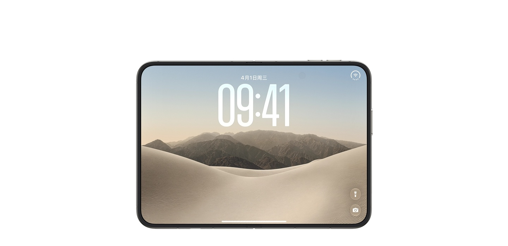
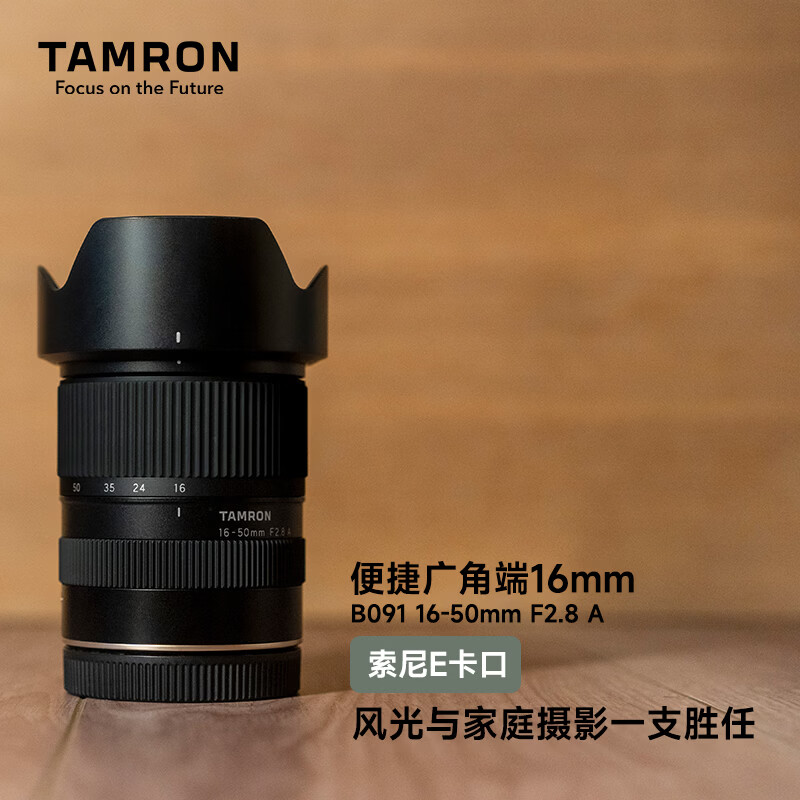
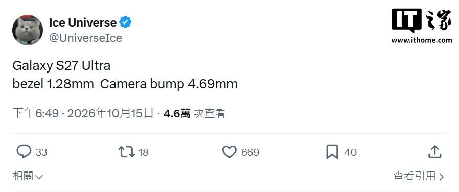
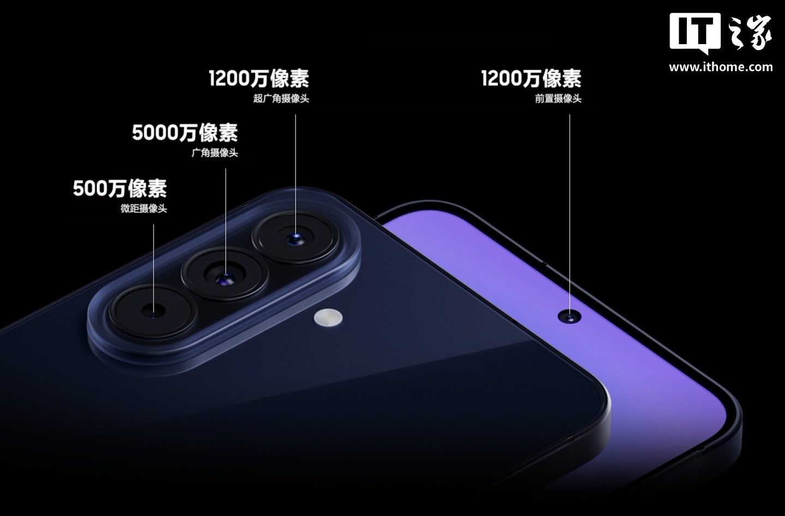
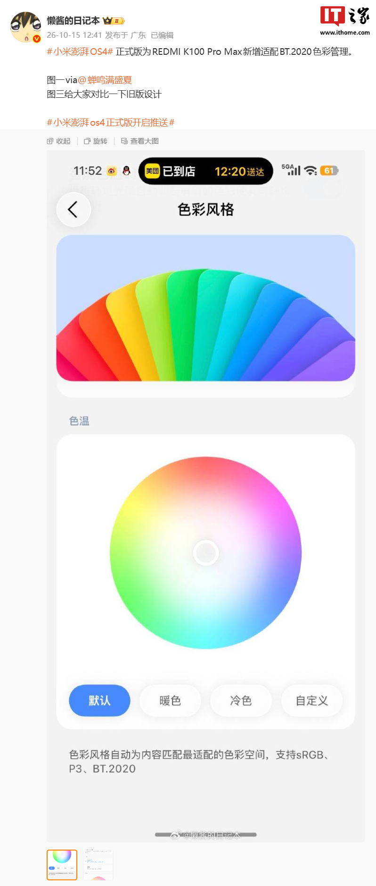
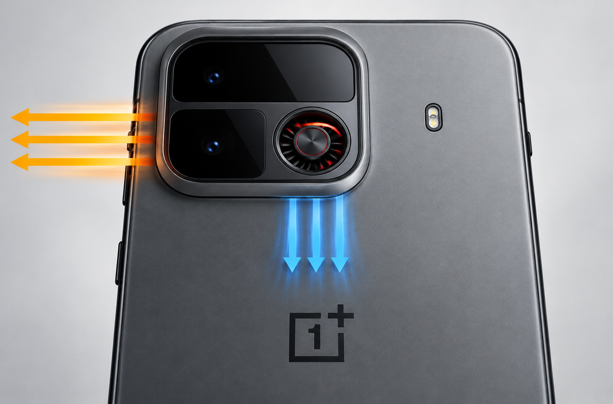
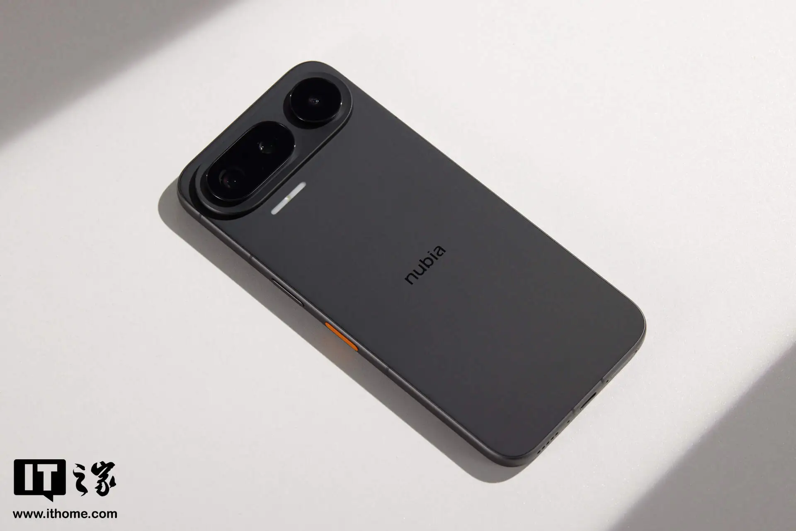
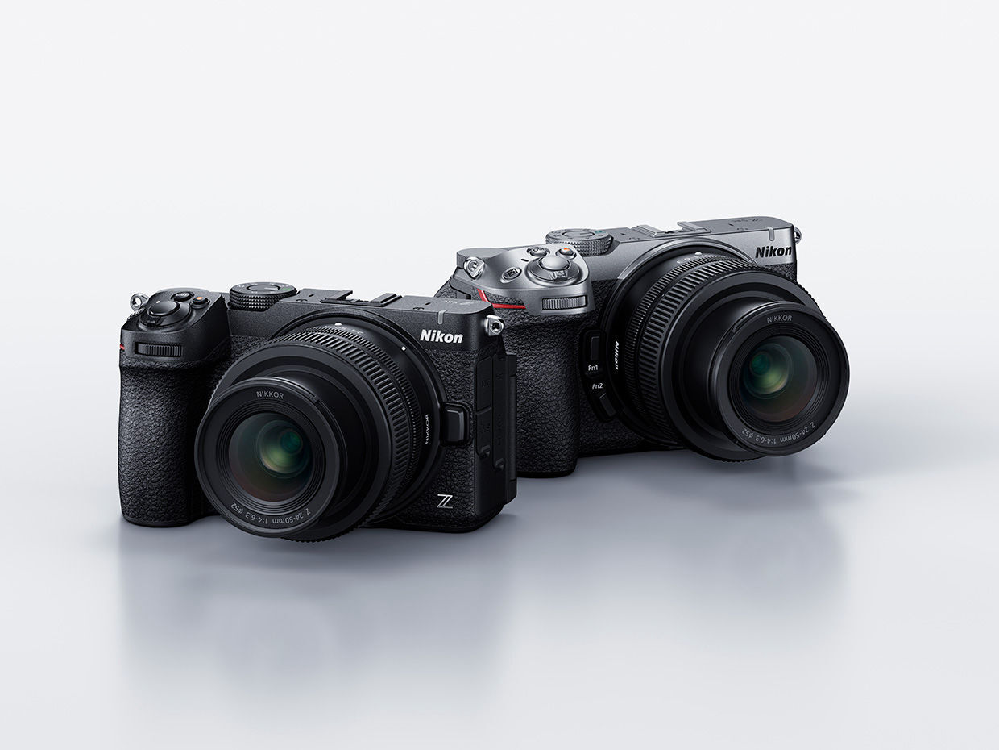
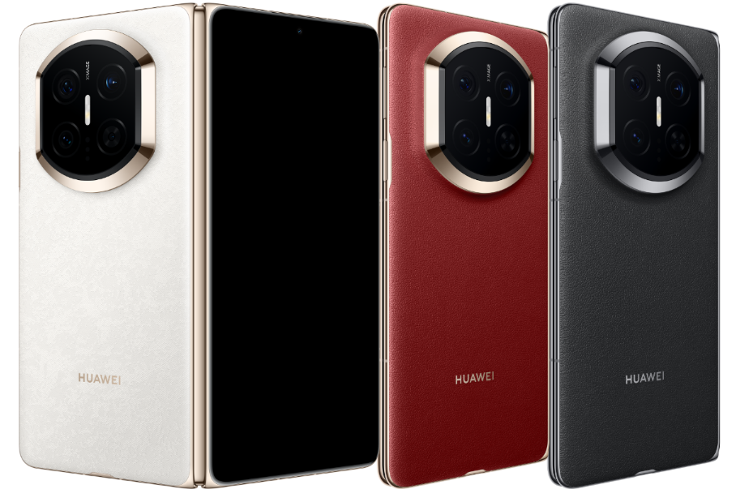

THE TECH EDIT
기술의 변화, 매일 한눈에.
카메라 · 스마트폰 · AI, 해외 테크 소식을 모아 전합니다.
최근 발행2026-10-16
새로 들어온 소식
LATEST STORIES최신 뉴스
전체 3,734개 기사TTArtisan AF 24mm F3.8 풀프레임 팬케이크 렌즈, Sony E 마운트용 출시
TSMC 웨이저자 CEO: 머스크의 테라팹(Terafab) 프로젝트 평가 중, 텍사스는 미국 확장 옵션 중 하나
티몰 2026년 광군제 브랜드 참여 역대 최고 기록: 신제품 첫 출시 규모 신기록, iPhone 18 Pro 시리즈 플랫폼 할인 참여 확정

테르누스, 초기 폴더블 디스플레이 스마트폰에 대해 "약간 저렴하고 품질도 좋지 않았다" 언급, Apple은 2011년부터 관련 기술 탐색 시작

탐론 16-50mm F2.8 A 대구경 미러리스 렌즈 B091S, Sony E 마운트 첫 출시 가격 2,999위안
워크맨 3세대: Sony, 플래그십 뮤직 플레이어 신제품 WM1ZM3, WM1AM3 의도치 않게 유출

Samsung Galaxy S27 Ultra 스마트폰, 화면 베젤 약 1.28mm로 약간 좁아질 전망

Samsung Galaxy A58 스마트폰 카메라 유출: 500만 화소 접사 카메라 7년째 유지될 듯

Redmi K100 Pro Max 스마트폰, Xiaomi HyperOS 4로 업그레이드, BT.2020 색상 관리 지원 추가
24GB+1TB "황제" 사양 재현: 레드매직 12 Pro+ GOLDEN SAGA 진금전장판 플래그십 스마트폰 공식 발표

Red Magic 12 Pro+ 게이밍 스마트폰 출시: Snapdragon 8 Elite Extreme Gen 6, 액체 냉각 시스템, 8,400mAh 배터리 등 탑재
OPPO Reno 17 시리즈로 예상되는 중급 이미지 스마트폰, 다음 달 출시 예정

원플러스 에이스 7 및 에이스 7 프로, 스냅드래곤 8 엘리트 젠 5 탑재 스마트폰으로 출시 확정

Nubia NaviX Ultra 스마트폰의 새로운 색상 '스타리 스카이 컬렉션 에디션' 공개, 마이크로 나노 부조 공정 디자인 적용

Nikon Z5ⅡC 풀프레임 미러리스 카메라 출시: 초보자용, 본체 9,999위안

징둥 11.11 스마트폰 추가 할인: iPhone 18 Pro Max, 650위안 깜짝 할인, 512GB 모델 12349위안
IT之家 11.11 엄선 특가: 20시 전 채널 프로모션 대폭 추가, iPhone Duo 15,999위안 카운트다운 시작

화웨이 메이트 X8 유출, 디스플레이, 카메라, 배터리, 가격 공개
Honor WIN 2 스마트폰 핵심 사양 대공개: 200MP 대형 센서 듀얼 카메라(망원 없음), 3D 초음파 지문 인식 등
GTA 5, 11월 17일 Sony PS+ 회원 라이브러리에서 삭제, GTA 6 출시 이틀 전
Apple "봄 축제" 이후 첫 번째 최고 수준의 실전: iPhone 18 Pro Max, 터키 패션쇼 촬영 주도
검색 결과가 없습니다
다른 검색어를 입력하거나 필터를 초기화해 보세요.